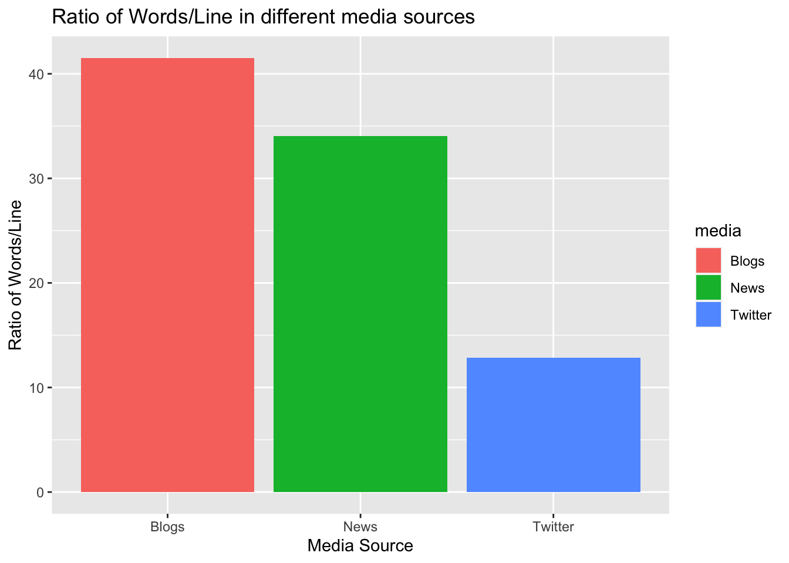

3 Data Processing
3.1 File Size
For convenience file path is set and file size obtained to gauge the file size for three different sources. File size is converted to Megabytes.
3.2 Count lines and words
Lines are read from each source and number of lines and words are counted.
#read lines
blogs<-readLines(blogs_path,warn=FALSE,encoding="UTF-8")
twitter<-readLines(twitter_path,warn=FALSE,encoding="UTF-8")
news<-readLines(news_path,warn=FALSE,encoding="UTF-8")
# count words per line
nwlblogs <- stri_count_words(blogs)
nwltwitter <- stri_count_words(twitter)
nwlnews<- stri_count_words(news)
#count number of words
nwblogs <- wordcount(blogs, sep = " ")
nwtwitter <- wordcount(twitter, sep = " ")
nwnews <- wordcount(news, sep = " ")
#count number of lines
nlblogs <- countLines(blogs_path)
nltwitter <- countLines(twitter_path)
nlnews <- countLines(news_path)3.3 Data Summary
There are more than 30 million words in each source which is a great assest to create predicting algorithm. Variables AWP and MWP is mean words per line and median words per line respectively.
data <- data.table(
Items = c("Blogs", "Twitter", "News"),
FileName=c("en_US.blogs.txt","en_US.twitter.txt", "en_US.news.txt "),
Size_MB = c(sb, st, sn),
Words = c(nwblogs, nwtwitter, nwnews),
Lines = c(nlblogs, nltwitter, nlnews),
AWP = c(mean(nwlblogs), mean(nwltwitter), mean(nwlnews)),
MWP = c(median(nwlblogs), median(nwltwitter), median(nwlnews))
)
data Items FileName Size_MB Words Lines AWP MWP
1: Blogs en_US.blogs.txt 200.4242 37334131 899288 41.75107 28
2: Twitter en_US.twitter.txt 159.3641 30373543 2360148 12.75063 12
3: News en_US.news.txt 196.2775 34372530 1010242 34.40997 323.4 Ratio
The plot for ratio of words per line was created for visualization purpose. As per the plot, ratio of words/line is the highest in the blog.
ratio = data.frame(ratio=c(nwblogs/nlblogs, nwtwitter/nltwitter, nwnews/nlnews), media=as.factor(c("Blogs", "Twitter", "News")))
ggplot(data = ratio, aes(x=media, y= ratio, fill =media)) +
geom_bar(stat="identity") +
labs(title="Ratio of Words/Line in different media sources", x="Media Source",y="Ratio of Words/Line")
3.5 Prepare Training Data
Dataset of three different sources will be sampled at 10% for training. This 10% is an arbitary number for the training data which can be modified as required by the prediction model for accuracy. All non english characters are removed from the subset of the data and then combined into a single data set for a corpus sample.
set.seed(165)
#selecting ten percent of data as training data
samplesize <- 0.1
#Sample for each source
blogsS <- blogs[sample(1:length(blogs), length(blogs) * samplesize)]
twitterS<- twitter[sample(1:length(twitter), length(twitter) * samplesize)]
newsS <- news[sample(1:length(news), length(news) * samplesize)]
# remove all non-English characters from the sampled data
blogsS <- iconv(blogsS, "latin1", "ASCII", sub = "")
newsS <- iconv(newsS , "latin1", "ASCII", sub = "")
twitterS <- iconv(twitterS, "latin1", "ASCII", sub = "")
Sample <- c(blogsS, twitterS, newsS)3.6 Data Cleaning
3.6.1 Profanity
Obscene languages should be removed. The dataset of profane words can be obtained from School of Computer Science, Carnegie Mellon University which has more than 1,300 blasphemous words.
3.6.2 Tokenization and N-Gram Generation
The following transformations is made in the sample dataset. * Remove numbers * Remove punctuation marks * Remove URL * Remove separators * Remove symbols * Remove Twitter handles * Applied Stopwords * Converted to lower case * Stemming
# Build tokens using "quanteda" package
t <- tokens(Sample,
what="word",
remove_numbers = TRUE,
remove_punct = TRUE,
remove_url =TRUE,
remove_separators = TRUE,
remove_symbols = TRUE,
remove_twitter = TRUE,
verbose = TRUE)
# Remove stopwords
t <- tokens_replace(t,pattern =stopwords("english"),replacement=stopwords("english"))
#Set lower case for every word
t <- tokens_tolower(t)
#Apply stemmer to words
t <- tokens_wordstem(t, language = "english")
t.1gram <- tokens_ngrams(t, n = 1, concatenator = " ")
t.2gram <- tokens_ngrams(t, n = 2, concatenator = " ")
t.3gram <- tokens_ngrams(t, n = 3, concatenator = " ")3.7 Build document-feature matrices
The predictive model for the Shiny application will handle uniqrams, bigrams, and trigrams. The quanteda package is used to construct functions construct matrices of uniqrams, bigrams, and trigrams from the tokenized data.